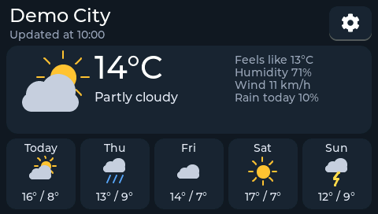
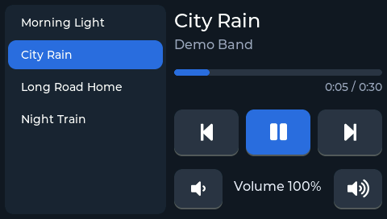

lvgl-mpy-linux¶
Turn a Linux board into a MicroPython board with a touch screen, where the GUI and the operating
system work as one. Write the GUI in Python with LVGL, use mpremote as on any MicroPython board,
and let every button reach what Linux can do: files, network, audio, GPIO, and every program the
board can run.



All these apps were built with LVGL MPY Studio through its MCP tools: an AI assistant designed the screens, wrote the code, tried it in the Studio's simulator and ran it on the board.
Status: mp135-v0.1. One board tested, the STM32MP135F-DK. A personal, experimental project for makers, not affiliated with, sponsored or endorsed by any of the manufacturers of the boards and chips it uses; their names only identify the hardware.
Why: the GUI and the operating system, together¶
On a Linux board the graphical app and the system usually live apart. On one side a GUI toolkit (Qt, GTK, a web page), on the other the programs and services of the system; between them, glue in C++, D-Bus or shell scripts. That glue is where most makers stop.
lvgl-mpy-linux puts the GUI inside the system. The screen is LVGL, written in Python, and the same Python code reaches everything Linux can do:
| A touch on the screen... | ...uses the operating system |
|---|---|
| plays a song or an internet radio | gst-play-1.0 (GStreamer), driven while it plays |
| shows the weather of the next days | curl in the background, the system clock |
| connects to a Wi-Fi network | wpa_supplicant and systemd-networkd, configured the standard way |
| runs a command, edits a file | a shell with real Linux programs on a pseudo-terminal |
| switches a LED, reads a button | the kernel's GPIO lines (machine.Pin) |
| powers the board off | systemctl poweroff |
And it works the other way round: the programs answer, and the GUI follows them live (the position of a song, the state of the network, the output of a command) without ever freezing, because the slow work runs in the background.
It is made for makers, so it keeps what makes microcontrollers easy:
- The workflow of a MicroPython board. A REPL on USB serial and TCP that
mpremoteand LVGL MPY Studio use as on any board (raw REPL,cp,run,mount), Ctrl-C, a soft reset in 0.2 s, safe mode on a button. No compositor, no cross-compiled C++, no image to rebuild for an app. - The same app on MCU and Linux. The
display_driverinterface is the one of the MCU boards of mpy-lvgl-boards: an app for an RP2350 or an ESP32 runs unchanged on a Linux board with a bigger screen, and can then grow into Linux. - An appliance, not a desktop. At power-on a shell on the display; a tap opens a menu of apps (weather, radio) and power off. The board becomes a device you build.
- Apps written with an assistant, and checked. LVGL MPY Studio's MCP tools let an AI assistant write the glue between the GUI and the system; the simulator and the tests on the board check it.
Get started¶
Install it on an STM32MP135F-DK running OpenSTLinux, then talk to it with mpremote.
Examples¶
Weather, web radio, MP3 player, Settings and a shell on the screen, each a Studio project.
How it is verified¶
Measurements, test results and known issues, with the logs of every check on the board.
LVGL MPY Studio and its MCP tools¶
LVGL MPY Studio designs LVGL screens by drag
and drop, runs them in a simulator and uploads them to the board. Import the board definition
(studio-board/boards/stm32mp135f_dk_480x272.json) in its board manager and the Linux board is one
more target.
The Studio also offers its tools through MCP, so an AI coding assistant can build a whole application: add pages and widgets, write handlers and Python modules, render the pages, play touch scripts in the simulator, upload to the board and read its console. That is how the examples here were made.
How it works¶
PC: LVGL MPY Studio / mpremote
│ USB serial (CDC-ACM) │ TCP over USB network
└──────────────┬──────────────┘
mpy-repl-hub one REPL for both, Ctrl-C as a signal, systemd watchdog
│ pseudo-terminal
MicroPython unix port + LVGL 9.5 REPL like the MCU ports, soft reset by execve
├── display_driver ── linuxfb ──── DRM panel
│ └─ touch_evdev ─ touchscreen
├── machine.Pin ─────────────────── GPIO character device
└── linuxproc ───────────────────── Linux programs (gst-play, curl, shell, ...)
MicroPython, LVGL and the LVGL binding are used unchanged: everything is an out-of-tree variant, user C modules and frozen Python.
Boards¶
| Board | Status |
|---|---|
| STM32MP135F-DK (480×272, OpenSTLinux) | Tested: build, installation, REPL, display, touch, GPIO, Wi-Fi, examples |
| STM32MP157C-DK2 (800×480, with a Cortex-M4) | Working: the same build, examples, Wi-Fi, sound; machine.I2C, ADC, PWM, SPI, UART and Timer served by the Cortex-M4 over RPMsg (notes) |
| Other Linux boards | The Linux parts are generic; a port needs a build for its CPU |
What a Linux board needs: a panel the kernel drives through DRM, a touchscreen through evdev, and a USB device port for the serial REPL (or only the network for the TCP REPL).
What's next: the machine class, above all with an MCU on board¶
machine offers Pin on the kernel's GPIO lines and, on the STM32MP157C-DK2, I2C, ADC,
PWM, SPI, UART and Timer served by its Cortex-M4. The plan is to port the rest of the
MicroPython machine API (WDT, Pin.irq) with the same names and behaviour as on the MCU ports, so that
hardware code moves between boards unchanged.
A board that pairs Linux with a microcontroller gets the best of both: Python and the GUI on
Linux, the real-time work on the MCU. On the STM32MP157C-DK2 machine talks to our firmware on the
Cortex-M4 over RPMsg (about 0.3 ms a request: measured latency), so a Python app
reads sensors with microcontroller timing while Linux keeps the screen, the network and the
programs. On boards without an MCU the
same classes will use the kernel's drivers.
See the STM32MP157C-DK2.
Limits¶
Honestly, today:
- Two boards tested, both STM32MP1. The parts for other Linux boards are written but not tried on one yet.
- Start-up takes about 33 s on the stock OpenSTLinux image.
machinehasPin, andI2C,ADC,PWM,SPI,UARTandTimeron the STM32MP157C-DK2, for now: see what's next above.- No vsync: fast full-screen animations can tear.
- The TCP REPL has no password: it listens only on the USB network.
MicroPython, LVGL and the LVGL binding of PyDevices do the hard work. MIT license.